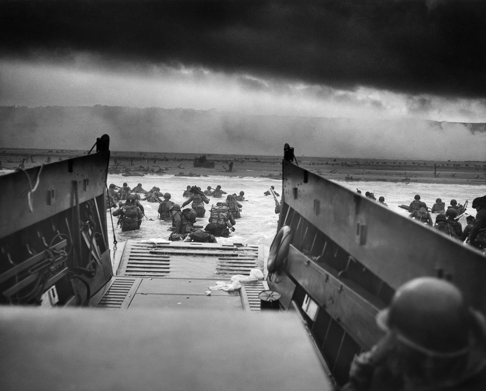

Directions: Fill in the chart as we study each stage of the European war. Keep this page in your notebook. You will use it again on the review day before the unit test.

| Stage | Date | Allied aim | Result | Cost |
|---|---|---|---|---|
| North Africa | ||||
| Sicily and Italy | ||||
| Normandy | ||||
| The Bulge | ||||
| Germany and the end |
The road in one sentence. Finish this sentence in your own words, using at least two rows of the chart as evidence. The Allies reached VE Day by way of North Africa and Normandy because...
| Stage | Date | Allied aim | Result | Cost |
|---|---|---|---|---|
| North Africa | November 1942 to May 1943 | Land American troops against Germany, clear the Mediterranean's southern shore and sea lanes. | Axis forces in Tunisia surrendered in May 1943. | About 250,000 Axis prisoners taken; the Kasserine setback in February 1943 cost men, tanks, and confidence. |
| Sicily and Italy | July 1943 to spring 1945 | Take Sicily, knock Italy out of the Axis, tie down German divisions. | Sicily fell in five weeks, Italy surrendered, Rome fell on June 4, 1944. | A slow mountain war of rivers and ridges after Germany occupied the peninsula. |
| Normandy | June 6, 1944 | Open the second front with the largest seaborne invasion in history. | About 156,000 troops ashore on the first day across five beaches; the breakout followed in late July. | The heaviest American losses of the day at Omaha Beach, under fire from the bluffs. |
| The Bulge | December 1944 to February 1945 | Hold the line against Germany's last offensive in the west and relieve Bastogne. | The offensive failed and the Allied line was restored. | About 75,000 American casualties, estimated; Germany spent armor and fuel it could not replace. |
| Germany and the end | March to May 1945 | Cross the Rhine, overrun Germany from west and east, force unconditional surrender. | Rhine crossed at Remagen, the Elbe meeting on April 25, surrender on May 7, VE Day on May 8. | Heavy losses on all sides in a ruined country; Soviet deaths across the whole war are estimated at about 27 million. |
The road in one sentence. Strong answers run the stages in order and name what each one bought. North Africa gave the Allies a first victory and the Mediterranean, Italy removed an Axis partner at the price of a mountain war, Normandy opened the front the Soviet Union had demanded since 1942, the Bulge spent Germany's last reserve, and the Rhine and Elbe crossings in the spring of 1945 ended the war in Europe.